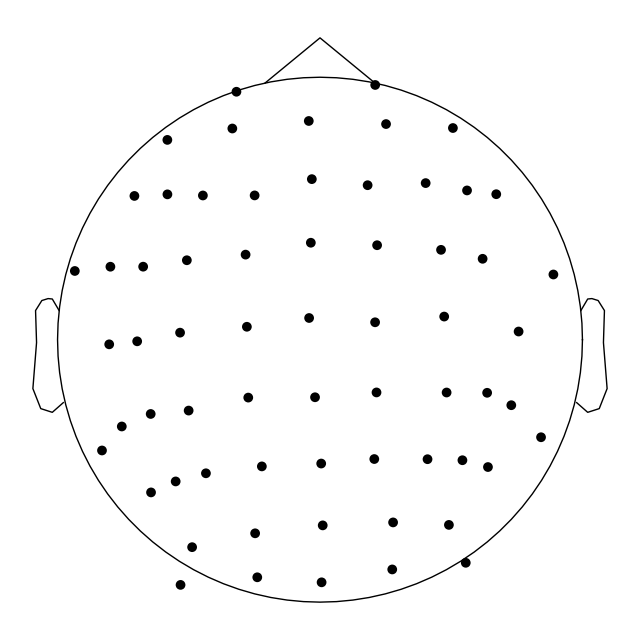

Note
Go to the end to download the full example code.
04. Convert EEG data to BIDS format#
In this example, we use MNE-BIDS to create a BIDS-compatible directory of EEG data. Specifically, we will follow these steps:
Download some EEG data from the PhysioBank database.
Load the data, extract information, and save it in a new BIDS directory.
Check the result and compare it with the standard.
Cite
mne-bids.
# Authors: The MNE-BIDS developers
# SPDX-License-Identifier: BSD-3-Clause
We are importing everything we need for this example:
import os.path as op
import shutil
import mne
from mne.datasets import eegbci
from mne_bids import BIDSPath, print_dir_tree, write_raw_bids
from mne_bids.stats import count_events
Download the data#
First, we need some data to work with. We will use the EEG Motor Movement/Imagery Dataset available on the PhysioBank database.
The data consists of 109 volunteers performing 14 experimental runs each. For each subject, there were two baseline tasks (i) eyes open, (ii) eyes closed, as well as four different motor imagery tasks.
In this example, we will download the data for a single subject doing the baseline task “eyes closed” and format it to the Brain Imaging Data Structure (BIDS).
Conveniently, there is already a data loading function available with MNE-Python:
Using default location ~/mne_data for EEGBCI...
[PosixPath('/home/circleci/mne_data/MNE-eegbci-data/files/eegmmidb/1.0.0/S001/S001R02.edf')]
Let’s see whether the data has been downloaded using a quick visualization of the directory tree.
# get MNE directory with example data
mne_data_dir = mne.get_config("MNE_DATASETS_EEGBCI_PATH")
data_dir = op.join(mne_data_dir, "MNE-eegbci-data")
print_dir_tree(data_dir)
|MNE-eegbci-data/
|--- files/
|------ eegmmidb/
|--------- 1.0.0/
|------------ S001/
|--------------- S001R02.edf
|--------------- S001R04.edf
|--------------- S001R08.edf
|--------------- S001R12.edf
|------------ S002/
|--------------- S002R04.edf
|--------------- S002R08.edf
|--------------- S002R12.edf
The data are in the European Data Format with
the .edf extension, which is good for us because next to the
BrainVision format, EDF is one of the recommended file formats for EEG
data in BIDS format.
However, apart from the data format, we need to build a directory structure and supply meta data files to properly bidsify this data.
We will do exactly that in the next step.
Convert to BIDS#
Let’s start with loading the data and extracting the events.
We are reading the data using MNE-Python’s io module and the
mne.io.read_raw_edf() function.
Note that we must use the preload=False parameter, which is the default
in MNE-Python.
It prevents the data from being loaded and modified when converting to BIDS.
# Load the data from "2 minutes eyes closed rest"
edf_path = eegbci.load_data(subject=subject, runs=run)[0]
raw = mne.io.read_raw_edf(edf_path, preload=False)
raw.info["line_freq"] = 50 # specify power line frequency as required by BIDS
Extracting EDF parameters from /home/circleci/mne_data/MNE-eegbci-data/files/eegmmidb/1.0.0/S001/S001R02.edf...
EDF file detected
Setting channel info structure...
Creating raw.info structure...
For the sake of the example we will also pretend that we have the electrode coordinates for the data recordings. We will use a coordinates file from the MNE testing data in CapTrak format.
Note
The *electrodes.tsv and *coordsystem.json files in BIDS are
intended to carry information about digitized (i.e., measured)
electrode positions on the scalp of the research subject. Do not
(!) use these files to store “template” or “idealized” electrode
positions, like those that can be obtained from
mne.channels.make_standard_montage()!
# Get the electrode coordinates
testing_data = mne.datasets.testing.data_path()
captrak_path = op.join(testing_data, "montage", "captrak_coords.bvct")
montage = mne.channels.read_dig_captrak(captrak_path)
# Rename the montage channel names only for this example, because as said
# before, coordinate and EEG data were not actually collected together
# Do *not* do this for your own data.
montage.rename_channels(dict(zip(montage.ch_names, raw.ch_names)))
# "attach" the electrode coordinates to the `raw` object
# Note that this only works for some channel types (EEG/sEEG/ECoG/DBS/fNIRS)
raw.set_montage(montage)
# show the electrode positions
raw.plot_sensors()

Using default location ~/mne_data for testing...
Dataset testing version 0.154 out of date, latest version is 0.155
0.00B [00:00, ?B/s]
722kB [00:00, 7.03MB/s]
1.46MB [00:00, 7.16MB/s]
2.23MB [00:00, 7.36MB/s]
2.97MB [00:00, 7.27MB/s]
3.69MB [00:00, 7.17MB/s]
4.41MB [00:00, 7.08MB/s]
5.13MB [00:00, 7.08MB/s]
5.84MB [00:00, 7.04MB/s]
6.55MB [00:00, 6.99MB/s]
7.26MB [00:01, 6.97MB/s]
7.98MB [00:01, 7.03MB/s]
8.70MB [00:01, 6.97MB/s]
9.45MB [00:01, 7.13MB/s]
10.2MB [00:01, 7.23MB/s]
11.0MB [00:01, 7.34MB/s]
11.8MB [00:01, 7.44MB/s]
12.6MB [00:01, 7.56MB/s]
13.4MB [00:01, 7.59MB/s]
14.3MB [00:01, 8.12MB/s]
15.4MB [00:02, 8.80MB/s]
16.5MB [00:02, 8.95MB/s]
17.4MB [00:02, 7.52MB/s]
18.2MB [00:02, 7.66MB/s]
19.2MB [00:02, 8.32MB/s]
20.1MB [00:02, 8.25MB/s]
21.0MB [00:02, 7.82MB/s]
21.8MB [00:03, 5.87MB/s]
22.5MB [00:03, 5.17MB/s]
23.1MB [00:03, 4.46MB/s]
23.6MB [00:03, 4.25MB/s]
24.0MB [00:03, 3.84MB/s]
24.4MB [00:03, 3.70MB/s]
24.8MB [00:03, 3.43MB/s]
25.2MB [00:04, 3.29MB/s]
25.5MB [00:04, 3.14MB/s]
25.8MB [00:04, 3.12MB/s]
26.1MB [00:04, 2.96MB/s]
26.5MB [00:04, 3.00MB/s]
26.8MB [00:04, 3.02MB/s]
27.1MB [00:04, 3.00MB/s]
27.5MB [00:04, 2.97MB/s]
27.8MB [00:04, 2.95MB/s]
28.1MB [00:05, 2.93MB/s]
28.4MB [00:05, 2.92MB/s]
28.7MB [00:05, 2.91MB/s]
28.9MB [00:05, 2.90MB/s]
29.2MB [00:05, 2.82MB/s]
29.6MB [00:05, 2.83MB/s]
29.9MB [00:05, 2.88MB/s]
30.2MB [00:05, 2.90MB/s]
30.5MB [00:05, 2.89MB/s]
30.8MB [00:06, 2.86MB/s]
31.1MB [00:06, 2.85MB/s]
31.4MB [00:06, 2.87MB/s]
31.7MB [00:06, 2.86MB/s]
32.2MB [00:06, 3.67MB/s]
32.6MB [00:06, 2.55MB/s]
33.0MB [00:06, 2.70MB/s]
33.4MB [00:06, 2.97MB/s]
33.8MB [00:06, 3.20MB/s]
34.2MB [00:07, 3.30MB/s]
34.5MB [00:07, 3.34MB/s]
34.9MB [00:07, 3.32MB/s]
35.2MB [00:07, 3.34MB/s]
35.6MB [00:07, 3.40MB/s]
36.0MB [00:07, 3.57MB/s]
36.4MB [00:07, 3.66MB/s]
36.8MB [00:07, 3.66MB/s]
37.2MB [00:07, 3.70MB/s]
37.6MB [00:08, 3.73MB/s]
38.0MB [00:08, 3.69MB/s]
38.4MB [00:08, 3.71MB/s]
38.8MB [00:08, 3.77MB/s]
39.2MB [00:08, 3.78MB/s]
39.6MB [00:08, 3.82MB/s]
40.0MB [00:08, 3.80MB/s]
40.6MB [00:08, 4.30MB/s]
41.1MB [00:08, 4.46MB/s]
41.5MB [00:09, 2.91MB/s]
42.4MB [00:09, 4.25MB/s]
43.4MB [00:09, 5.39MB/s]
44.3MB [00:09, 6.42MB/s]
45.3MB [00:09, 7.25MB/s]
46.3MB [00:09, 7.91MB/s]
47.3MB [00:09, 8.37MB/s]
48.2MB [00:09, 8.70MB/s]
49.2MB [00:09, 8.93MB/s]
50.1MB [00:10, 9.10MB/s]
51.1MB [00:10, 9.21MB/s]
52.0MB [00:10, 9.27MB/s]
53.0MB [00:10, 9.27MB/s]
53.9MB [00:10, 6.52MB/s]
54.7MB [00:10, 5.38MB/s]
55.3MB [00:11, 4.98MB/s]
55.9MB [00:11, 4.38MB/s]
56.4MB [00:11, 4.19MB/s]
56.9MB [00:11, 4.15MB/s]
57.3MB [00:11, 4.02MB/s]
57.8MB [00:11, 4.25MB/s]
58.2MB [00:11, 4.08MB/s]
58.7MB [00:11, 4.02MB/s]
59.1MB [00:11, 3.97MB/s]
59.5MB [00:12, 3.84MB/s]
59.9MB [00:12, 3.77MB/s]
60.2MB [00:12, 3.70MB/s]
60.6MB [00:12, 3.63MB/s]
61.0MB [00:12, 3.68MB/s]
61.4MB [00:12, 3.67MB/s]
61.8MB [00:12, 3.73MB/s]
62.2MB [00:12, 3.71MB/s]
62.6MB [00:12, 3.72MB/s]
63.0MB [00:13, 3.68MB/s]
63.4MB [00:13, 3.69MB/s]
63.8MB [00:13, 3.70MB/s]
64.2MB [00:13, 3.76MB/s]
64.7MB [00:13, 3.81MB/s]
65.1MB [00:13, 3.81MB/s]
65.6MB [00:13, 4.13MB/s]
66.0MB [00:13, 4.31MB/s]
66.5MB [00:13, 4.13MB/s]
66.9MB [00:14, 3.97MB/s]
67.3MB [00:14, 3.92MB/s]
67.7MB [00:14, 3.86MB/s]
68.1MB [00:14, 3.78MB/s]
68.5MB [00:14, 3.75MB/s]
68.9MB [00:14, 3.76MB/s]
69.3MB [00:14, 3.70MB/s]
69.7MB [00:14, 3.76MB/s]
70.1MB [00:14, 3.70MB/s]
70.5MB [00:15, 3.65MB/s]
70.9MB [00:15, 3.68MB/s]
71.3MB [00:15, 3.71MB/s]
71.7MB [00:15, 3.70MB/s]
72.1MB [00:15, 3.73MB/s]
72.5MB [00:15, 3.74MB/s]
72.9MB [00:15, 3.78MB/s]
73.3MB [00:15, 3.81MB/s]
73.6MB [00:15, 3.77MB/s]
74.1MB [00:15, 3.99MB/s]
74.7MB [00:16, 4.38MB/s]
75.4MB [00:16, 5.20MB/s]
76.3MB [00:16, 6.30MB/s]
77.2MB [00:16, 6.93MB/s]
78.1MB [00:16, 7.59MB/s]
79.0MB [00:16, 7.90MB/s]
80.0MB [00:16, 8.30MB/s]
80.9MB [00:16, 8.65MB/s]
81.9MB [00:16, 8.92MB/s]
82.8MB [00:16, 8.73MB/s]
83.7MB [00:17, 8.85MB/s]
84.6MB [00:17, 8.91MB/s]
85.5MB [00:17, 8.77MB/s]
86.4MB [00:17, 8.89MB/s]
87.4MB [00:17, 9.09MB/s]
88.3MB [00:17, 9.08MB/s]
89.3MB [00:17, 9.15MB/s]
90.2MB [00:17, 9.14MB/s]
91.2MB [00:17, 9.19MB/s]
92.1MB [00:18, 9.30MB/s]
93.1MB [00:18, 9.32MB/s]
94.1MB [00:18, 9.44MB/s]
95.0MB [00:18, 9.41MB/s]
96.0MB [00:18, 9.39MB/s]
96.9MB [00:18, 9.29MB/s]
97.9MB [00:18, 9.42MB/s]
98.8MB [00:18, 9.33MB/s]
99.8MB [00:18, 6.80MB/s]
101MB [00:19, 6.23MB/s]
101MB [00:19, 5.81MB/s]
102MB [00:19, 5.42MB/s]
102MB [00:19, 5.53MB/s]
103MB [00:19, 6.34MB/s]
104MB [00:19, 7.09MB/s]
105MB [00:19, 7.68MB/s]
106MB [00:19, 8.19MB/s]
107MB [00:20, 8.49MB/s]
108MB [00:20, 8.08MB/s]
109MB [00:20, 7.88MB/s]
110MB [00:20, 7.53MB/s]
111MB [00:20, 8.11MB/s]
112MB [00:20, 8.56MB/s]
112MB [00:20, 8.43MB/s]
113MB [00:20, 6.37MB/s]
115MB [00:20, 8.34MB/s]
117MB [00:21, 11.4MB/s]
119MB [00:21, 13.2MB/s]
120MB [00:21, 12.6MB/s]
122MB [00:21, 13.8MB/s]
124MB [00:21, 14.8MB/s]
125MB [00:21, 15.4MB/s]
127MB [00:21, 15.3MB/s]
128MB [00:22, 10.0MB/s]
131MB [00:22, 12.5MB/s]
132MB [00:22, 13.0MB/s]
134MB [00:22, 14.6MB/s]
136MB [00:22, 13.2MB/s]
138MB [00:22, 14.4MB/s]
140MB [00:22, 16.3MB/s]
143MB [00:22, 20.3MB/s]
145MB [00:22, 16.3MB/s]
147MB [00:23, 16.5MB/s]
149MB [00:23, 16.6MB/s]
150MB [00:23, 16.7MB/s]
152MB [00:23, 17.0MB/s]
154MB [00:23, 15.4MB/s]
156MB [00:23, 14.6MB/s]
157MB [00:23, 13.6MB/s]
159MB [00:24, 9.21MB/s]
160MB [00:24, 7.31MB/s]
161MB [00:24, 6.02MB/s]
161MB [00:24, 6.19MB/s]
164MB [00:24, 9.83MB/s]
166MB [00:24, 13.0MB/s]
169MB [00:24, 16.0MB/s]
171MB [00:25, 16.3MB/s]
173MB [00:25, 16.5MB/s]
175MB [00:25, 16.6MB/s]
177MB [00:25, 16.7MB/s]
178MB [00:25, 16.3MB/s]
181MB [00:25, 18.3MB/s]
183MB [00:25, 18.5MB/s]
185MB [00:25, 20.3MB/s]
187MB [00:26, 16.8MB/s]
189MB [00:26, 13.6MB/s]
190MB [00:26, 12.3MB/s]
192MB [00:26, 13.0MB/s]
194MB [00:26, 15.1MB/s]
196MB [00:26, 15.7MB/s]
198MB [00:26, 11.9MB/s]
199MB [00:27, 10.4MB/s]
200MB [00:27, 8.48MB/s]
201MB [00:27, 8.52MB/s]
203MB [00:27, 10.7MB/s]
205MB [00:27, 13.1MB/s]
207MB [00:27, 8.61MB/s]
208MB [00:28, 8.06MB/s]
210MB [00:28, 9.98MB/s]
211MB [00:28, 6.51MB/s]
213MB [00:28, 7.48MB/s]
215MB [00:28, 9.23MB/s]
216MB [00:29, 10.5MB/s]
218MB [00:29, 6.96MB/s]
219MB [00:29, 8.65MB/s]
221MB [00:29, 9.98MB/s]
222MB [00:30, 6.73MB/s]
223MB [00:30, 5.10MB/s]
225MB [00:30, 7.04MB/s]
227MB [00:30, 7.45MB/s]
228MB [00:30, 5.67MB/s]
229MB [00:31, 7.40MB/s]
231MB [00:31, 9.47MB/s]
233MB [00:31, 6.97MB/s]
234MB [00:31, 6.89MB/s]
236MB [00:31, 7.83MB/s]
238MB [00:31, 9.94MB/s]
239MB [00:32, 11.1MB/s]
240MB [00:32, 7.05MB/s]
242MB [00:32, 8.84MB/s]
244MB [00:32, 10.8MB/s]
246MB [00:33, 6.77MB/s]
248MB [00:33, 8.96MB/s]
249MB [00:33, 8.57MB/s]
251MB [00:33, 10.3MB/s]
253MB [00:33, 9.71MB/s]
254MB [00:33, 7.06MB/s]
256MB [00:34, 9.03MB/s]
258MB [00:34, 10.6MB/s]
259MB [00:34, 6.74MB/s]
261MB [00:34, 8.66MB/s]
263MB [00:34, 10.1MB/s]
264MB [00:34, 11.8MB/s]
266MB [00:35, 7.45MB/s]
268MB [00:35, 9.27MB/s]
270MB [00:35, 10.9MB/s]
271MB [00:35, 7.18MB/s]
273MB [00:36, 9.34MB/s]
275MB [00:36, 10.1MB/s]
277MB [00:36, 12.1MB/s]
278MB [00:36, 10.1MB/s]
280MB [00:36, 8.02MB/s]
282MB [00:36, 10.1MB/s]
283MB [00:36, 10.9MB/s]
285MB [00:37, 6.94MB/s]
287MB [00:37, 8.62MB/s]
288MB [00:37, 10.0MB/s]
290MB [00:37, 11.5MB/s]
292MB [00:38, 7.02MB/s]
293MB [00:38, 8.35MB/s]
295MB [00:38, 10.4MB/s]
297MB [00:38, 7.50MB/s]
298MB [00:38, 7.17MB/s]
300MB [00:38, 9.71MB/s]
302MB [00:39, 12.3MB/s]
304MB [00:39, 14.1MB/s]
307MB [00:39, 16.7MB/s]
309MB [00:39, 17.8MB/s]
311MB [00:39, 19.5MB/s]
314MB [00:39, 20.7MB/s]
316MB [00:39, 21.5MB/s]
319MB [00:39, 22.2MB/s]
321MB [00:39, 21.4MB/s]
323MB [00:39, 22.1MB/s]
326MB [00:40, 22.3MB/s]
328MB [00:40, 21.7MB/s]
330MB [00:40, 21.3MB/s]
332MB [00:40, 11.5MB/s]
334MB [00:40, 12.3MB/s]
336MB [00:41, 7.90MB/s]
337MB [00:41, 9.19MB/s]
339MB [00:41, 11.3MB/s]
341MB [00:41, 7.34MB/s]
343MB [00:41, 8.87MB/s]
345MB [00:42, 11.3MB/s]
347MB [00:42, 13.6MB/s]
350MB [00:42, 15.6MB/s]
352MB [00:42, 17.4MB/s]
354MB [00:42, 18.8MB/s]
357MB [00:42, 19.8MB/s]
359MB [00:42, 20.8MB/s]
361MB [00:42, 21.4MB/s]
364MB [00:42, 22.1MB/s]
366MB [00:42, 22.4MB/s]
368MB [00:43, 22.7MB/s]
371MB [00:43, 21.8MB/s]
373MB [00:43, 12.4MB/s]
375MB [00:43, 14.6MB/s]
378MB [00:43, 16.6MB/s]
380MB [00:43, 18.4MB/s]
383MB [00:43, 19.8MB/s]
385MB [00:44, 20.5MB/s]
387MB [00:44, 14.5MB/s]
389MB [00:44, 10.1MB/s]
391MB [00:44, 11.8MB/s]
393MB [00:44, 14.0MB/s]
396MB [00:44, 16.1MB/s]
398MB [00:45, 17.9MB/s]
400MB [00:45, 19.4MB/s]
403MB [00:45, 20.5MB/s]
405MB [00:45, 11.2MB/s]
407MB [00:45, 10.9MB/s]
409MB [00:45, 13.0MB/s]
411MB [00:46, 15.1MB/s]
414MB [00:46, 16.8MB/s]
417MB [00:46, 19.9MB/s]
419MB [00:46, 12.9MB/s]
421MB [00:46, 10.1MB/s]
423MB [00:46, 11.6MB/s]
425MB [00:47, 13.1MB/s]
426MB [00:47, 13.6MB/s]
428MB [00:47, 7.85MB/s]
429MB [00:47, 6.42MB/s]
431MB [00:48, 8.04MB/s]
433MB [00:48, 10.3MB/s]
436MB [00:48, 12.5MB/s]
437MB [00:48, 7.92MB/s]
439MB [00:48, 7.44MB/s]
440MB [00:49, 7.14MB/s]
441MB [00:49, 7.59MB/s]
442MB [00:49, 8.12MB/s]
443MB [00:49, 8.69MB/s]
444MB [00:49, 9.04MB/s]
445MB [00:49, 9.35MB/s]
446MB [00:49, 9.67MB/s]
447MB [00:49, 9.85MB/s]
448MB [00:49, 9.76MB/s]
449MB [00:50, 9.85MB/s]
450MB [00:50, 9.86MB/s]
451MB [00:50, 9.82MB/s]
452MB [00:50, 9.86MB/s]
453MB [00:50, 9.96MB/s]
454MB [00:50, 10.0MB/s]
455MB [00:50, 10.2MB/s]
456MB [00:50, 10.3MB/s]
457MB [00:50, 10.4MB/s]
458MB [00:51, 6.66MB/s]
459MB [00:51, 5.15MB/s]
460MB [00:51, 5.28MB/s]
461MB [00:51, 4.50MB/s]
461MB [00:51, 4.08MB/s]
463MB [00:52, 6.96MB/s]
464MB [00:52, 4.42MB/s]
465MB [00:52, 4.37MB/s]
465MB [00:52, 4.26MB/s]
466MB [00:52, 4.22MB/s]
466MB [00:53, 4.22MB/s]
467MB [00:53, 4.26MB/s]
467MB [00:53, 4.08MB/s]
468MB [00:53, 4.04MB/s]
468MB [00:53, 3.98MB/s]
470MB [00:53, 4.50MB/s]
470MB [00:53, 4.47MB/s]
471MB [00:54, 4.40MB/s]
471MB [00:54, 4.27MB/s]
472MB [00:54, 4.17MB/s]
472MB [00:54, 4.11MB/s]
472MB [00:54, 4.09MB/s]
473MB [00:54, 4.09MB/s]
473MB [00:54, 4.08MB/s]
474MB [00:54, 4.00MB/s]
474MB [00:54, 3.94MB/s]
475MB [00:54, 3.90MB/s]
476MB [00:55, 6.14MB/s]
477MB [00:55, 9.10MB/s]
479MB [00:55, 11.4MB/s]
481MB [00:55, 12.9MB/s]
482MB [00:55, 10.9MB/s]
483MB [00:55, 9.32MB/s]
484MB [00:55, 10.2MB/s]
486MB [00:55, 12.4MB/s]
488MB [00:56, 13.3MB/s]
489MB [00:56, 13.0MB/s]
491MB [00:56, 8.20MB/s]
492MB [00:56, 6.51MB/s]
493MB [00:56, 5.76MB/s]
493MB [00:57, 5.35MB/s]
494MB [00:57, 5.05MB/s]
496MB [00:57, 7.07MB/s]
497MB [00:57, 4.46MB/s]
497MB [00:57, 4.44MB/s]
498MB [00:58, 4.27MB/s]
498MB [00:58, 4.29MB/s]
499MB [00:58, 4.21MB/s]
499MB [00:58, 4.17MB/s]
500MB [00:58, 4.20MB/s]
500MB [00:58, 4.04MB/s]
501MB [00:58, 4.46MB/s]
503MB [00:58, 8.26MB/s]
505MB [00:59, 11.2MB/s]
507MB [00:59, 13.4MB/s]
508MB [00:59, 14.9MB/s]
510MB [00:59, 16.1MB/s]
512MB [00:59, 16.8MB/s]
514MB [00:59, 17.3MB/s]
516MB [00:59, 18.0MB/s]
518MB [00:59, 18.2MB/s]
520MB [00:59, 18.4MB/s]
522MB [00:59, 18.6MB/s]
524MB [01:00, 18.6MB/s]
526MB [01:00, 19.3MB/s]
528MB [01:00, 18.8MB/s]
530MB [01:00, 10.0MB/s]
531MB [01:00, 7.31MB/s]
532MB [01:01, 6.24MB/s]
533MB [01:01, 5.63MB/s]
534MB [01:01, 5.27MB/s]
535MB [01:01, 6.51MB/s]
537MB [01:01, 8.68MB/s]
539MB [01:01, 10.7MB/s]
541MB [01:02, 12.5MB/s]
543MB [01:02, 14.1MB/s]
545MB [01:02, 15.3MB/s]
546MB [01:02, 16.3MB/s]
548MB [01:02, 17.1MB/s]
550MB [01:02, 17.3MB/s]
552MB [01:02, 18.1MB/s]
554MB [01:02, 18.6MB/s]
556MB [01:02, 18.9MB/s]
558MB [01:02, 19.1MB/s]
560MB [01:03, 19.2MB/s]
562MB [01:03, 19.2MB/s]
564MB [01:03, 7.88MB/s]
565MB [01:04, 6.34MB/s]
567MB [01:04, 5.68MB/s]
567MB [01:04, 5.36MB/s]
569MB [01:04, 7.27MB/s]
571MB [01:04, 9.02MB/s]
573MB [01:04, 10.9MB/s]
575MB [01:05, 12.6MB/s]
577MB [01:05, 13.7MB/s]
579MB [01:05, 15.5MB/s]
581MB [01:05, 16.2MB/s]
583MB [01:05, 17.0MB/s]
584MB [01:05, 17.6MB/s]
586MB [01:05, 18.0MB/s]
588MB [01:05, 18.4MB/s]
590MB [01:05, 18.4MB/s]
592MB [01:05, 18.9MB/s]
594MB [01:06, 19.0MB/s]
596MB [01:06, 10.6MB/s]
598MB [01:06, 7.61MB/s]
599MB [01:07, 6.39MB/s]
600MB [01:07, 5.76MB/s]
600MB [01:07, 5.34MB/s]
602MB [01:07, 6.49MB/s]
604MB [01:07, 8.81MB/s]
606MB [01:07, 11.0MB/s]
607MB [01:07, 12.9MB/s]
609MB [01:07, 14.4MB/s]
611MB [01:08, 15.5MB/s]
613MB [01:08, 16.4MB/s]
615MB [01:08, 17.1MB/s]
617MB [01:08, 17.1MB/s]
619MB [01:08, 17.6MB/s]
621MB [01:08, 18.2MB/s]
623MB [01:08, 18.7MB/s]
625MB [01:08, 19.1MB/s]
627MB [01:08, 19.4MB/s]
629MB [01:09, 19.5MB/s]
631MB [01:09, 7.56MB/s]
632MB [01:10, 6.23MB/s]
633MB [01:10, 5.67MB/s]
634MB [01:10, 5.63MB/s]
636MB [01:10, 4.59MB/s]
636MB [01:11, 4.52MB/s]
637MB [01:11, 4.50MB/s]
637MB [01:11, 4.35MB/s]
638MB [01:11, 4.29MB/s]
638MB [01:11, 4.23MB/s]
639MB [01:11, 4.27MB/s]
639MB [01:11, 4.16MB/s]
640MB [01:11, 4.16MB/s]
640MB [01:11, 4.14MB/s]
641MB [01:12, 4.24MB/s]
641MB [01:12, 4.83MB/s]
642MB [01:12, 5.18MB/s]
643MB [01:12, 5.57MB/s]
643MB [01:12, 5.69MB/s]
644MB [01:12, 5.86MB/s]
645MB [01:12, 5.95MB/s]
645MB [01:12, 6.04MB/s]
646MB [01:12, 6.04MB/s]
646MB [01:13, 6.07MB/s]
647MB [01:13, 6.07MB/s]
648MB [01:13, 6.07MB/s]
648MB [01:13, 6.09MB/s]
649MB [01:13, 6.24MB/s]
650MB [01:13, 6.26MB/s]
650MB [01:13, 6.29MB/s]
651MB [01:13, 6.28MB/s]
652MB [01:13, 6.28MB/s]
652MB [01:13, 6.36MB/s]
653MB [01:14, 6.46MB/s]
654MB [01:14, 6.47MB/s]
654MB [01:14, 6.47MB/s]
655MB [01:14, 6.46MB/s]
656MB [01:14, 6.48MB/s]
656MB [01:14, 6.52MB/s]
657MB [01:14, 6.60MB/s]
658MB [01:14, 6.58MB/s]
658MB [01:14, 6.61MB/s]
659MB [01:14, 6.62MB/s]
660MB [01:15, 6.62MB/s]
660MB [01:15, 6.61MB/s]
661MB [01:15, 6.71MB/s]
662MB [01:15, 6.64MB/s]
662MB [01:15, 6.48MB/s]
663MB [01:15, 6.37MB/s]
664MB [01:15, 3.66MB/s]
664MB [01:16, 3.88MB/s]
665MB [01:16, 3.82MB/s]
665MB [01:16, 3.93MB/s]
666MB [01:16, 3.96MB/s]
666MB [01:16, 4.02MB/s]
666MB [01:16, 3.98MB/s]
667MB [01:16, 4.09MB/s]
667MB [01:16, 4.05MB/s]
668MB [01:16, 4.07MB/s]
668MB [01:17, 4.09MB/s]
669MB [01:17, 5.39MB/s]
671MB [01:17, 9.24MB/s]
673MB [01:17, 11.9MB/s]
675MB [01:17, 14.0MB/s]
677MB [01:17, 15.5MB/s]
678MB [01:17, 16.3MB/s]
680MB [01:17, 17.3MB/s]
682MB [01:17, 17.7MB/s]
684MB [01:17, 16.7MB/s]
686MB [01:18, 17.4MB/s]
688MB [01:18, 18.0MB/s]
690MB [01:18, 18.4MB/s]
692MB [01:18, 18.8MB/s]
694MB [01:18, 18.2MB/s]
696MB [01:18, 18.6MB/s]
698MB [01:19, 8.52MB/s]
699MB [01:19, 6.78MB/s]
700MB [01:19, 5.95MB/s]
701MB [01:19, 5.47MB/s]
702MB [01:20, 5.21MB/s]
703MB [01:20, 5.67MB/s]
704MB [01:20, 5.33MB/s]
705MB [01:20, 5.04MB/s]
705MB [01:20, 4.78MB/s]
706MB [01:20, 4.60MB/s]
706MB [01:20, 4.53MB/s]
707MB [01:21, 4.38MB/s]
707MB [01:21, 4.35MB/s]
707MB [01:21, 4.30MB/s]
708MB [01:21, 4.14MB/s]
709MB [01:21, 5.01MB/s]
711MB [01:21, 8.99MB/s]
712MB [01:21, 11.9MB/s]
714MB [01:21, 14.0MB/s]
716MB [01:21, 15.6MB/s]
718MB [01:22, 16.7MB/s]
720MB [01:22, 17.6MB/s]
722MB [01:22, 18.3MB/s]
724MB [01:22, 18.8MB/s]
726MB [01:22, 10.7MB/s]
728MB [01:23, 7.63MB/s]
729MB [01:23, 6.41MB/s]
730MB [01:23, 5.91MB/s]
731MB [01:23, 7.39MB/s]
732MB [01:23, 6.25MB/s]
733MB [01:24, 5.63MB/s]
734MB [01:24, 5.23MB/s]
735MB [01:24, 4.93MB/s]
735MB [01:24, 4.70MB/s]
736MB [01:24, 4.64MB/s]
736MB [01:24, 4.41MB/s]
737MB [01:24, 6.28MB/s]
738MB [01:25, 4.37MB/s]
739MB [01:25, 4.22MB/s]
739MB [01:25, 4.27MB/s]
740MB [01:25, 4.17MB/s]
740MB [01:25, 4.22MB/s]
741MB [01:25, 4.15MB/s]
741MB [01:25, 4.16MB/s]
741MB [01:26, 4.11MB/s]
742MB [01:26, 4.06MB/s]
742MB [01:26, 4.15MB/s]
743MB [01:26, 4.10MB/s]
744MB [01:26, 7.62MB/s]
746MB [01:26, 11.0MB/s]
748MB [01:26, 13.3MB/s]
750MB [01:26, 14.9MB/s]
752MB [01:26, 16.2MB/s]
754MB [01:26, 17.2MB/s]
756MB [01:27, 18.0MB/s]
758MB [01:27, 18.4MB/s]
760MB [01:27, 18.8MB/s]
762MB [01:27, 19.2MB/s]
764MB [01:27, 19.5MB/s]
766MB [01:27, 19.7MB/s]
768MB [01:27, 19.7MB/s]
770MB [01:27, 19.8MB/s]
772MB [01:28, 12.7MB/s]
774MB [01:28, 8.33MB/s]
775MB [01:28, 6.77MB/s]
776MB [01:28, 5.99MB/s]
777MB [01:29, 6.67MB/s]
778MB [01:29, 6.83MB/s]
779MB [01:29, 5.96MB/s]
779MB [01:29, 5.45MB/s]
780MB [01:29, 5.08MB/s]
781MB [01:29, 4.76MB/s]
781MB [01:29, 4.74MB/s]
782MB [01:30, 4.48MB/s]
782MB [01:30, 4.43MB/s]
782MB [01:30, 4.36MB/s]
784MB [01:30, 6.80MB/s]
785MB [01:30, 5.86MB/s]
785MB [01:30, 5.22MB/s]
786MB [01:30, 4.76MB/s]
786MB [01:31, 4.59MB/s]
787MB [01:31, 4.34MB/s]
787MB [01:31, 4.31MB/s]
788MB [01:31, 4.26MB/s]
788MB [01:31, 4.23MB/s]
789MB [01:31, 4.15MB/s]
789MB [01:31, 4.06MB/s]
790MB [01:31, 6.83MB/s]
792MB [01:31, 9.67MB/s]
794MB [01:31, 12.0MB/s]
796MB [01:32, 13.0MB/s]
797MB [01:32, 13.8MB/s]
799MB [01:32, 14.5MB/s]
800MB [01:32, 14.7MB/s]
802MB [01:32, 15.0MB/s]
804MB [01:32, 12.1MB/s]
805MB [01:32, 12.4MB/s]
806MB [01:32, 12.7MB/s]
808MB [01:32, 12.6MB/s]
809MB [01:33, 12.3MB/s]
810MB [01:33, 12.2MB/s]
811MB [01:33, 12.2MB/s]
813MB [01:33, 12.6MB/s]
815MB [01:33, 16.1MB/s]
817MB [01:33, 16.4MB/s]
819MB [01:33, 12.1MB/s]
822MB [01:33, 16.6MB/s]
824MB [01:34, 16.4MB/s]
825MB [01:34, 16.8MB/s]
827MB [01:34, 16.3MB/s]
829MB [01:34, 15.9MB/s]
832MB [01:34, 18.7MB/s]
834MB [01:34, 20.6MB/s]
837MB [01:34, 22.1MB/s]
839MB [01:34, 22.5MB/s]
842MB [01:34, 22.7MB/s]
844MB [01:34, 23.5MB/s]
847MB [01:35, 25.0MB/s]
850MB [01:35, 25.8MB/s]
852MB [01:35, 10.1MB/s]
854MB [01:36, 6.38MB/s]
856MB [01:36, 5.15MB/s]
857MB [01:37, 4.51MB/s]
858MB [01:37, 4.09MB/s]
858MB [01:37, 3.89MB/s]
860MB [01:37, 5.41MB/s]
861MB [01:38, 5.90MB/s]
863MB [01:38, 7.48MB/s]
864MB [01:38, 9.66MB/s]
866MB [01:38, 11.2MB/s]
867MB [01:38, 11.6MB/s]
869MB [01:38, 12.2MB/s]
871MB [01:38, 13.5MB/s]
872MB [01:38, 14.2MB/s]
874MB [01:38, 11.3MB/s]
876MB [01:39, 13.6MB/s]
877MB [01:39, 11.2MB/s]
879MB [01:39, 7.62MB/s]
881MB [01:39, 9.84MB/s]
882MB [01:39, 10.7MB/s]
884MB [01:40, 6.86MB/s]
885MB [01:40, 5.97MB/s]
886MB [01:40, 5.39MB/s]
887MB [01:40, 6.13MB/s]
889MB [01:40, 10.4MB/s]
892MB [01:41, 13.7MB/s]
894MB [01:41, 13.6MB/s]
896MB [01:41, 13.4MB/s]
897MB [01:41, 12.4MB/s]
898MB [01:41, 7.34MB/s]
900MB [01:42, 7.09MB/s]
901MB [01:42, 5.69MB/s]
901MB [01:42, 5.22MB/s]
902MB [01:42, 5.40MB/s]
903MB [01:42, 5.24MB/s]
903MB [01:42, 4.62MB/s]
904MB [01:43, 4.24MB/s]
906MB [01:43, 7.12MB/s]
906MB [01:43, 5.60MB/s]
907MB [01:43, 4.73MB/s]
908MB [01:43, 5.73MB/s]
909MB [01:43, 6.76MB/s]
911MB [01:43, 9.43MB/s]
912MB [01:44, 6.32MB/s]
913MB [01:44, 5.88MB/s]
914MB [01:44, 5.96MB/s]
915MB [01:44, 4.98MB/s]
915MB [01:44, 4.55MB/s]
916MB [01:45, 4.66MB/s]
916MB [01:45, 5.13MB/s]
917MB [01:45, 4.65MB/s]
918MB [01:45, 4.31MB/s]
918MB [01:45, 4.08MB/s]
919MB [01:45, 6.06MB/s]
920MB [01:45, 6.58MB/s]
921MB [01:46, 5.23MB/s]
921MB [01:46, 4.74MB/s]
922MB [01:46, 4.81MB/s]
922MB [01:46, 4.88MB/s]
923MB [01:46, 5.29MB/s]
924MB [01:46, 4.98MB/s]
924MB [01:46, 4.34MB/s]
925MB [01:46, 4.14MB/s]
925MB [01:47, 4.16MB/s]
926MB [01:47, 4.78MB/s]
926MB [01:47, 4.72MB/s]
927MB [01:47, 4.37MB/s]
927MB [01:47, 3.93MB/s]
928MB [01:47, 3.73MB/s]
928MB [01:47, 4.40MB/s]
929MB [01:47, 4.78MB/s]
929MB [01:48, 4.30MB/s]
930MB [01:48, 3.96MB/s]
930MB [01:48, 3.89MB/s]
931MB [01:48, 4.11MB/s]
931MB [01:48, 4.93MB/s]
932MB [01:48, 4.55MB/s]
932MB [01:48, 4.09MB/s]
933MB [01:48, 3.90MB/s]
933MB [01:49, 3.63MB/s]
934MB [01:49, 3.54MB/s]
934MB [01:49, 3.33MB/s]
934MB [01:49, 3.24MB/s]
935MB [01:49, 3.77MB/s]
936MB [01:49, 4.65MB/s]
936MB [01:49, 4.66MB/s]
938MB [01:49, 7.47MB/s]
938MB [01:49, 6.27MB/s]
939MB [01:50, 5.55MB/s]
941MB [01:50, 8.43MB/s]
942MB [01:50, 6.57MB/s]
942MB [01:50, 5.25MB/s]
944MB [01:50, 7.32MB/s]
945MB [01:50, 6.37MB/s]
946MB [01:51, 6.50MB/s]
947MB [01:51, 8.33MB/s]
948MB [01:51, 6.80MB/s]
949MB [01:51, 7.00MB/s]
950MB [01:51, 8.43MB/s]
951MB [01:51, 6.75MB/s]
952MB [01:51, 7.68MB/s]
953MB [01:52, 8.05MB/s]
954MB [01:52, 6.40MB/s]
955MB [01:52, 5.95MB/s]
956MB [01:52, 7.44MB/s]
957MB [01:52, 6.44MB/s]
958MB [01:52, 6.49MB/s]
960MB [01:52, 8.50MB/s]
961MB [01:53, 6.99MB/s]
961MB [01:53, 7.16MB/s]
963MB [01:53, 8.64MB/s]
964MB [01:53, 6.85MB/s]
965MB [01:53, 8.41MB/s]
966MB [01:53, 7.84MB/s]
967MB [01:53, 6.42MB/s]
968MB [01:54, 6.08MB/s]
970MB [01:54, 9.69MB/s]
972MB [01:54, 12.9MB/s]
975MB [01:54, 15.5MB/s]
977MB [01:54, 17.3MB/s]
979MB [01:54, 17.6MB/s]
981MB [01:54, 17.7MB/s]
982MB [01:54, 17.7MB/s]
984MB [01:55, 8.65MB/s]
986MB [01:55, 10.6MB/s]
988MB [01:55, 8.21MB/s]
989MB [01:55, 7.75MB/s]
991MB [01:56, 9.42MB/s]
992MB [01:56, 9.00MB/s]
993MB [01:56, 6.11MB/s]
995MB [01:56, 7.85MB/s]
996MB [01:56, 8.17MB/s]
997MB [01:57, 5.89MB/s]
998MB [01:57, 4.95MB/s]
1.00GB [01:57, 7.21MB/s]
1.00GB [01:57, 6.61MB/s]
1.00GB [01:57, 9.08MB/s]
1.00GB [01:57, 9.94MB/s]
1.01GB [01:58, 6.68MB/s]
1.01GB [01:58, 8.55MB/s]
1.01GB [01:58, 9.89MB/s]
1.01GB [01:58, 6.55MB/s]
1.01GB [01:58, 8.43MB/s]
1.01GB [01:59, 9.69MB/s]
1.02GB [01:59, 6.55MB/s]
1.02GB [01:59, 8.44MB/s]
1.02GB [01:59, 10.6MB/s]
1.02GB [02:00, 6.87MB/s]
1.02GB [02:00, 8.12MB/s]
1.02GB [02:00, 10.3MB/s]
1.03GB [02:00, 7.00MB/s]
1.03GB [02:00, 7.76MB/s]
1.03GB [02:00, 9.55MB/s]
1.03GB [02:00, 10.3MB/s]
1.03GB [02:01, 6.69MB/s]
1.03GB [02:01, 6.81MB/s]
1.03GB [02:01, 6.37MB/s]
1.03GB [02:01, 6.38MB/s]
1.04GB [02:02, 5.71MB/s]
1.04GB [02:02, 5.36MB/s]
1.04GB [02:02, 7.80MB/s]
1.04GB [02:02, 12.7MB/s]
1.04GB [02:02, 16.5MB/s]
1.05GB [02:02, 20.2MB/s]
1.05GB [02:02, 22.1MB/s]
1.05GB [02:02, 24.4MB/s]
1.05GB [02:02, 25.1MB/s]
1.06GB [02:02, 27.0MB/s]
1.06GB [02:03, 27.2MB/s]
1.06GB [02:03, 15.5MB/s]
1.07GB [02:03, 12.2MB/s]
1.07GB [02:03, 12.3MB/s]
1.07GB [02:04, 11.6MB/s]
1.07GB [02:04, 10.9MB/s]
1.07GB [02:04, 7.84MB/s]
1.07GB [02:04, 8.88MB/s]
1.07GB [02:04, 6.48MB/s]
1.08GB [02:05, 7.62MB/s]
1.08GB [02:05, 6.68MB/s]
1.08GB [02:05, 5.91MB/s]
1.08GB [02:05, 7.45MB/s]
1.08GB [02:05, 7.26MB/s]
1.08GB [02:05, 5.60MB/s]
1.08GB [02:06, 6.63MB/s]
1.08GB [02:06, 6.82MB/s]
1.08GB [02:06, 5.21MB/s]
1.08GB [02:06, 4.96MB/s]
1.09GB [02:06, 6.67MB/s]
1.09GB [02:06, 5.33MB/s]
1.09GB [02:07, 4.98MB/s]
1.09GB [02:07, 6.88MB/s]
1.09GB [02:07, 5.30MB/s]
1.09GB [02:07, 5.08MB/s]
0.00B [00:00, ?B/s]
0.00B [00:00, ?B/s]
Download complete in 02m28s (1039.9 MB)
<Figure size 640x640 with 1 Axes>
With these steps, we have everything to start a new BIDS directory using our data.
To do that, we can use write_raw_bids()
Generally, write_raw_bids() tries to extract as much
meta data as possible from the raw data and then formats it in a BIDS
compatible way. write_raw_bids() takes a bunch of inputs, most of
which are however optional. The required inputs are:
rawbids_basenamebids_root
… as you can see in the docstring:
print(write_raw_bids.__doc__)
Save raw data to a BIDS-compliant folder structure.
.. warning:: * The original file is simply copied over if the original
file format is BIDS-supported for that datatype. Otherwise,
this function will convert to a BIDS-supported file format
while warning the user. For EEG and iEEG data, conversion
will be to BrainVision format; for MEG, conversion will be
to FIFF.
* ``mne-bids`` will infer the manufacturer information
from the file extension. If your file format is non-standard
for the manufacturer, please update the manufacturer field
in the sidecars manually.
Parameters
----------
raw : mne.io.Raw
The raw data. It must be an instance of `mne.io.Raw` that is not
already loaded from disk unless ``allow_preload`` is explicitly set
to ``True``. See warning for the ``allow_preload`` parameter.
bids_path : BIDSPath
The file to write. The :class:`mne_bids.BIDSPath` instance passed here
**must** have the ``subject``, ``task``, and ``root`` attributes set.
If the ``datatype`` attribute is not set, it will be inferred from the
recording data type found in ``raw``. In case of multiple data types,
the ``.datatype`` attribute must be set.
Example::
bids_path = BIDSPath(subject='01', session='01', task='testing',
acquisition='01', run='01', datatype='meg',
root='/data/BIDS')
This will write the following files in the correct subfolder ``root``::
sub-01_ses-01_task-testing_acq-01_run-01_meg.fif
sub-01_ses-01_task-testing_acq-01_run-01_meg.json
sub-01_ses-01_task-testing_acq-01_run-01_channels.tsv
sub-01_ses-01_acq-01_coordsystem.json
and the following one if ``events`` is not ``None``::
sub-01_ses-01_task-testing_acq-01_run-01_events.tsv
and add a line to the following files::
participants.tsv
scans.tsv
Note that the extension is automatically inferred from the raw
object.
events : path-like | np.ndarray | None
Use this parameter to specify events to write to the ``*_events.tsv``
sidecar file, additionally to the object's :class:`~mne.Annotations`
(which are always written).
If ``path-like``, specifies the location of an MNE events file.
If an array, the MNE events array (shape: ``(n_events, 3)``).
If a path or an array and ``raw.annotations`` exist, the union of
``events`` and ``raw.annotations`` will be written.
Mappings from event names to event codes (listed in the third
column of the MNE events array) must be specified via the ``event_id``
parameter; otherwise, an exception is raised. If
:class:`~mne.Annotations` are present, their descriptions must be
included in ``event_id`` as well.
If ``None``, events will only be inferred from the raw object's
:class:`~mne.Annotations`.
.. note::
If specified, writes the union of ``events`` and
``raw.annotations``. If you wish to **only** write
``raw.annotations``, pass ``events=None``. If you want to
**exclude** the events in ``raw.annotations`` from being written,
call ``raw.set_annotations(None)`` before invoking this function.
.. note::
Either, descriptions of all event codes must be specified via the
``event_id`` parameter or each event must be accompanied by a
row in ``event_metadata``.
event_id : dict | None
Descriptions or names describing the event codes, if you passed
``events``. The descriptions will be written to the ``trial_type``
column in ``*_events.tsv``. The dictionary keys correspond to the event
description,s and the values to the event codes. You must specify a
description for all event codes appearing in ``events``. If your data
contains :class:`~mne.Annotations`, you can use this parameter to
assign event codes to each unique annotation description (mapping from
description to event code).
event_metadata : pandas.DataFrame | None
Metadata for each event in ``events``. Each row corresponds to an event.
extra_columns_descriptions : dict | None
A dictionary that maps column names of the ``event_metadata`` to descriptions.
Each column of ``event_metadata`` must have a corresponding entry in this.
anonymize : dict | None
If `None` (default), no anonymization is performed.
If a dictionary, data will be anonymized depending on the dictionary
keys: ``daysback`` is a required key, ``keep_his`` is optional.
``daysback`` : int
Number of days by which to move back the recording date in time.
In studies with multiple subjects the relative recording date
differences between subjects can be kept by using the same number
of ``daysback`` for all subject anonymizations. ``daysback`` should
be great enough to shift the date prior to 1925 to conform with
BIDS anonymization rules.
``keep_his`` : bool
If ``False`` (default), all subject information next to the
recording date will be overwritten as well. If ``True``, keep
subject information apart from the recording date.
``keep_source`` : bool
Whether to store the name of the ``raw`` input file in the
``source`` column of ``scans.tsv``. By default, this information
is not stored.
format : 'auto' | 'BrainVision' | 'EDF' | 'FIF' | 'EEGLAB'
Controls the file format of the data after BIDS conversion. If
``'auto'``, MNE-BIDS will attempt to convert the input data to BIDS
without a change of the original file format. A conversion to a
different file format will then only take place if the original file
format lacks some necessary features.
Conversion may be forced to BrainVision, EDF, or EEGLAB for (i)EEG,
and to FIF for MEG data.
symlink : bool
Instead of copying the source files, only create symbolic links to
preserve storage space. This is only allowed when not anonymizing the
data (i.e., ``anonymize`` must be ``None``).
.. note::
Symlinks currently only work with FIFF files. In case of split
files, only a link to the first file will be created, and
:func:`mne_bids.read_raw_bids` will correctly handle reading the
data again.
.. note::
Symlinks are currently only supported on macOS and Linux. We will
add support for Windows 10 at a later time.
empty_room : mne.io.Raw | BIDSPath | None
The empty-room recording to be associated with this file. This is
only supported for MEG data.
If :class:`~mne.io.Raw`, you may pass raw data that was not preloaded
(otherwise, pass ``allow_preload=True``); i.e., it behaves similar to
the ``raw`` parameter. The session name will be automatically generated
from the raw object's ``info['meas_date']``.
If a :class:`~mne_bids.BIDSPath`, the ``root`` attribute must be the
same as in ``bids_path``. Pass ``None`` (default) if you do not wish to
specify an associated empty-room recording.
.. versionchanged:: 0.11
Accepts :class:`~mne.io.Raw` data.
allow_preload : bool
If ``True``, allow writing of preloaded raw objects (i.e.,
``raw.preload`` is ``True``). Because the original file is ignored, you
must specify what ``format`` to write (not ``auto``).
.. warning::
BIDS was originally designed for unprocessed or minimally processed
data. For this reason, by default, we prevent writing of preloaded
data that may have been modified. Only use this option when
absolutely necessary: for example, manually converting from file
formats not supported by MNE or writing preprocessed derivatives.
Be aware that these use cases are not fully supported.
montage : mne.channels.DigMontage | None
The montage with channel positions if channel position data are
to be stored in a format other than "head" (the internal MNE
coordinate frame that the data in ``raw`` is stored in).
acpc_aligned : bool
It is difficult to check whether the T1 scan is ACPC aligned which
means that "mri" coordinate space is "ACPC" BIDS coordinate space.
So, this flag is required to be True when the digitization data
is in "mri" for intracranial data to confirm that the T1 is
ACPC-aligned.
overwrite : bool
Whether to overwrite existing files or data in files.
Defaults to ``False``.
If ``True``, any existing files with the same BIDS parameters
will be overwritten with the exception of the ``*_participants.tsv``
and ``*_scans.tsv`` files. For these files, parts of pre-existing data
that match the current data will be replaced. For
``*_participants.tsv``, specifically, age, sex and hand fields will be
overwritten, while any manually added fields in ``participants.json``
and ``participants.tsv`` by a user will be retained.
If ``False``, no existing data will be overwritten or
replaced.
verbose : bool | str | int | None
Control verbosity of the logging output. If ``None``, use the default
verbosity level. See the :ref:`logging documentation <tut-logging>` and
:func:`mne.verbose` for details. Should only be passed as a keyword
argument.
Returns
-------
bids_path : BIDSPath
The path of the created data file.
.. note::
If you passed empty-room raw data via ``empty_room``, the
:class:`~mne_bids.BIDSPath` of the empty-room recording can be
retrieved via ``bids_path.find_empty_room(use_sidecar_only=True)``.
Notes
-----
You should ensure that ``raw.info['subject_info']`` and
``raw.info['meas_date']`` are set to proper (not-``None``) values to allow
for the correct computation of each participant's age when creating
``*_participants.tsv``.
This function will convert existing `mne.Annotations` from
``raw.annotations`` to events. Additionally, any events supplied via
``events`` will be written too. To avoid writing of annotations,
remove them from the raw file via ``raw.set_annotations(None)`` before
invoking ``write_raw_bids``.
To write events encoded in a ``STIM`` channel, you first need to create the
events array manually and pass it to this function:
..
events = mne.find_events(raw, min_duration=0.002)
write_raw_bids(..., events=events)
See the documentation of :func:`mne.find_events` for more information on
event extraction from ``STIM`` channels.
When anonymizing ``.edf`` files, then the file format for EDF limits
how far back we can set the recording date. Therefore, all anonymized
EDF datasets will have an internal recording date of ``01-01-1985``,
and the actual recording date will be stored in the ``scans.tsv``
file's ``acq_time`` column.
``write_raw_bids`` will generate a ``dataset_description.json`` file
if it does not already exist. Minimal metadata will be written there.
If one sets ``overwrite`` to ``True`` here, it will not overwrite an
existing ``dataset_description.json`` file.
If you need to add more data there, or overwrite it, then you should
call :func:`mne_bids.make_dataset_description` directly.
When writing EDF or BDF files, all file extensions are forced to be
lower-case, in compliance with the BIDS specification.
See Also
--------
mne.io.Raw.anonymize
mne.find_events
mne.Annotations
mne.events_from_annotations
We loaded S001R02.edf, which corresponds to subject 1 in the second run.
In the second run of the experiment, the task was to rest with closed eyes.
# zero padding to account for >100 subjects in this dataset
subject_id = "001"
# define a task name and a directory where to save the data to
task = "RestEyesClosed"
bids_root = op.join(mne_data_dir, "eegmmidb_bids_eeg_example")
To ensure the output path doesn’t contain any leftover files from previous tests and example runs, we simply delete it.
Warning
Do not delete directories that may contain important data!
The data contains annotations; which will be converted to events automatically by MNE-BIDS when writing the BIDS data:
print(raw.annotations)
<Annotations | 1 segment: T0 (1)>
Finally, let’s write the BIDS data!
bids_path = BIDSPath(subject=subject_id, task=task, root=bids_root)
write_raw_bids(raw, bids_path, overwrite=True)
Extracting EDF parameters from /home/circleci/mne_data/MNE-eegbci-data/files/eegmmidb/1.0.0/S001/S001R02.edf...
EDF file detected
Setting channel info structure...
Creating raw.info structure...
Writing '/home/circleci/mne_data/eegmmidb_bids_eeg_example/README'...
Writing '/home/circleci/mne_data/eegmmidb_bids_eeg_example/participants.tsv'...
Writing '/home/circleci/mne_data/eegmmidb_bids_eeg_example/participants.json'...
Writing '/home/circleci/mne_data/eegmmidb_bids_eeg_example/sub-001/eeg/sub-001_space-CapTrak_electrodes.tsv'...
Writing '/home/circleci/mne_data/eegmmidb_bids_eeg_example/sub-001/eeg/sub-001_space-CapTrak_coordsystem.json'...
The provided raw data contains annotations, but you did not pass an "event_id" mapping from annotation descriptions to event codes. We will generate arbitrary event codes. To specify custom event codes, please pass "event_id".
Used Annotations descriptions: [np.str_('T0')]
Writing '/home/circleci/mne_data/eegmmidb_bids_eeg_example/sub-001/eeg/sub-001_task-RestEyesClosed_events.tsv'...
Writing '/home/circleci/mne_data/eegmmidb_bids_eeg_example/sub-001/eeg/sub-001_task-RestEyesClosed_events.json'...
Writing '/home/circleci/mne_data/eegmmidb_bids_eeg_example/dataset_description.json'...
Writing '/home/circleci/mne_data/eegmmidb_bids_eeg_example/sub-001/eeg/sub-001_task-RestEyesClosed_eeg.json'...
Writing '/home/circleci/mne_data/eegmmidb_bids_eeg_example/sub-001/eeg/sub-001_task-RestEyesClosed_channels.tsv'...
Copying data files to sub-001_task-RestEyesClosed_eeg.edf
Writing '/home/circleci/mne_data/eegmmidb_bids_eeg_example/sub-001/sub-001_scans.tsv'...
Wrote /home/circleci/mne_data/eegmmidb_bids_eeg_example/sub-001/sub-001_scans.tsv entry with eeg/sub-001_task-RestEyesClosed_eeg.edf.
BIDSPath(
root: /home/circleci/mne_data/eegmmidb_bids_eeg_example
datatype: eeg
basename: sub-001_task-RestEyesClosed_eeg.edf)
What does our fresh BIDS directory look like?
|eegmmidb_bids_eeg_example/
|--- README
|--- dataset_description.json
|--- participants.json
|--- participants.tsv
|--- sub-001/
|------ sub-001_scans.tsv
|------ eeg/
|--------- sub-001_space-CapTrak_coordsystem.json
|--------- sub-001_space-CapTrak_electrodes.tsv
|--------- sub-001_task-RestEyesClosed_channels.tsv
|--------- sub-001_task-RestEyesClosed_eeg.edf
|--------- sub-001_task-RestEyesClosed_eeg.json
|--------- sub-001_task-RestEyesClosed_events.json
|--------- sub-001_task-RestEyesClosed_events.tsv
Finally let’s get an overview of the events on the whole dataset
We can see that MNE-BIDS wrote several important files related to subject 1 for us:
electrodes.tsvcontaining the electrode coordinates andcoordsystem.json, which contains the metadata about the electrode coordinates.The actual EDF data file (now with a proper BIDS name) and an accompanying
*_eeg.jsonfile that contains metadata about the EEG recording.The
*scans.jsonfile lists all data recordings with their acquisition date. This file becomes more handy once there are multiple sessions and recordings to keep track of.And finally,
channels.tsvandevents.tsvwhich contain even further metadata.
Next to the subject specific files, MNE-BIDS also created several experiment specific files. However, we will not go into detail for them in this example.
Cite mne-bids#
After a lot of work was done by MNE-BIDS, it’s fair to cite the software when preparing a manuscript and/or a dataset publication.
We can see that the appropriate citations are already written in the
README file.
If you are preparing a manuscript, please make sure to also cite MNE-BIDS there.
References
----------
Appelhoff, S., Sanderson, M., Brooks, T., Vliet, M., Quentin, R., Holdgraf, C., Chaumon, M., Mikulan, E., Tavabi, K., Höchenberger, R., Welke, D., Brunner, C., Rockhill, A., Larson, E., Gramfort, A. and Jas, M. (2019). MNE-BIDS: Organizing electrophysiological data into the BIDS format and facilitating their analysis. Journal of Open Source Software 4: (1896).https://doi.org/10.21105/joss.01896
Pernet, C. R., Appelhoff, S., Gorgolewski, K. J., Flandin, G., Phillips, C., Delorme, A., Oostenveld, R. (2019). EEG-BIDS, an extension to the brain imaging data structure for electroencephalography. Scientific Data, 6, 103.https://doi.org/10.1038/s41597-019-0104-8
Now it’s time to manually check the BIDS directory and the meta files to add all the information that MNE-BIDS could not infer. For instance, you must describe EEGReference and EEGGround yourself. It’s easy to find these by searching for “n/a” in the sidecar files.
Remember that there is a convenient javascript tool to validate all your BIDS directories called the “BIDS-validator”, available as a web version and a command line tool:
Web version: https://bids-standard.github.io/bids-validator/
Command line tool: https://www.npmjs.com/package/bids-validator
Total running time of the script: (2 minutes 28.394 seconds)